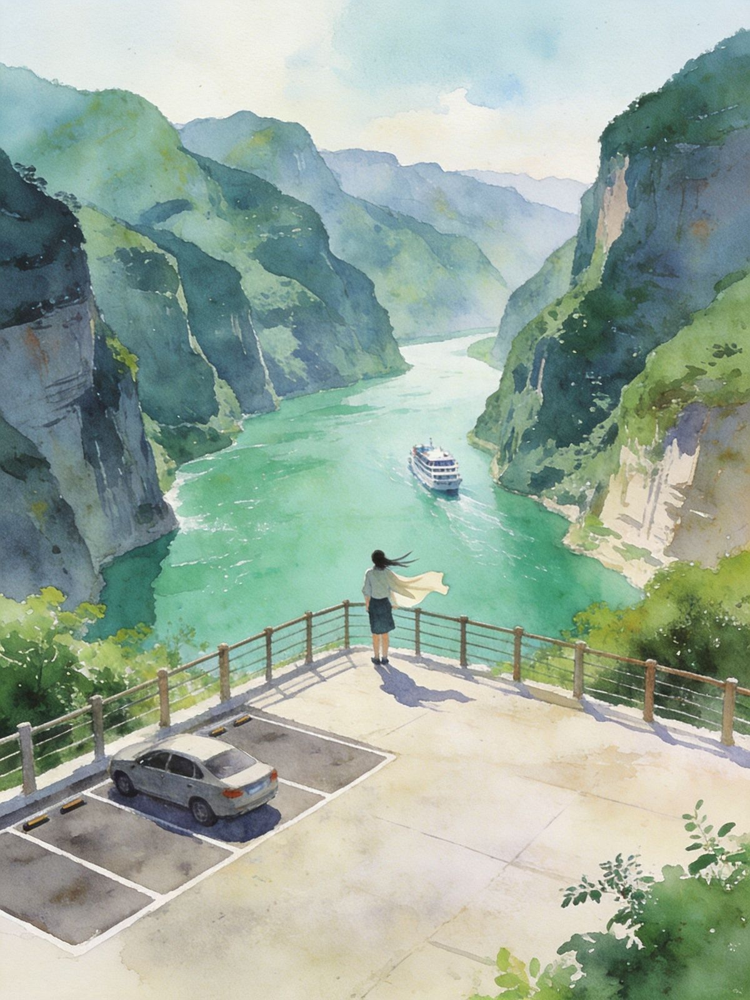
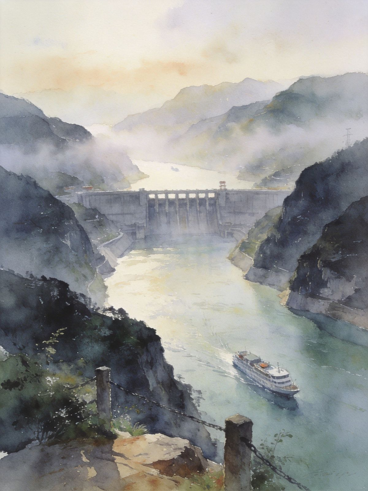
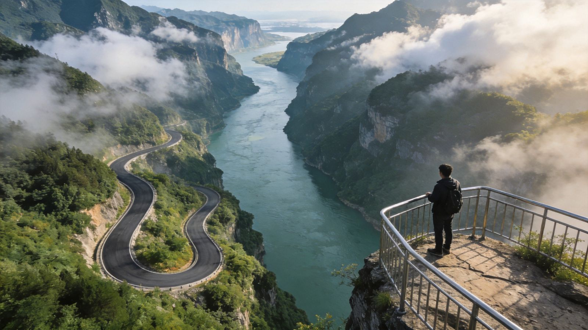

紧贴西陵峡江岸蜿蜒的 39.6 公里免费风景廊道，位于葛洲坝与三峡大坝之间，是"陆上游三峡"的沿江自驾画廊——车停江边，吹风看峡谷，一路不花钱。
全程免费 · 免门票 入选交通运输部"交旅融合典型案例"G348 三峡公路（官方名 G348 三峡旅游公路）是宜昌"陆上游三峡"的招牌路段。它不走隧道、不钻山，而是**贴着西陵峡江岸**一路铺开，把过往只能坐船看的三峡江景，变成了开车就能看。路线位于**葛洲坝与三峡大坝之间**，串起三峡大坝、西陵峡、三峡人家，属于"过路即风景"的沿江景观公路。
它的"咖位"：入选交通运输部**第一批"交通运输与旅游融合发展典型案例"**，被自驾圈拿来和新疆独库公路相提并论，社交平台（自驾、露营、机车圈）热度很高，属"此生必走一次"那类美丽公路。
沿线设有 听风谷、山外山、明月台、西陵峡0.618、莲沱畔 等 9 个观景台/服务区，平均每 5 公里一个停靠点。开到哪儿都方便停车，站到江边看峡谷、吹江风、拍公路大片。
G348 本身就在三峡核心游览带里，**最适合"玩三峡顺便开一段"**。以下景点与它同处西陵峡两岸 / 沿线，可组合成一天到两天的自驾串线：
就在 G348 沿线，峡江吊脚楼、土家民俗实景演出，"三峡最美人家景"。公路直达 · 沿线
五A级，看大国重器、泄洪壮景。G348 江对岸或经摆渡可达，需提前预约。公路沿途可眺望
三峡中最美的峡谷段，来鳩堆、兵书宝剑峡都在沿线，徒步 / 观景皆宜。公路主体所在
从宜昌市区出发即可上公路，葛洲坝船闸观景台是沿线起点之一。30-60分钟车程
如计划"坐船游三峡"，可自驾一段 G348 后在码头换乘游轮，水陆结合。可与游船衔接
紧邻三峡大坝上游，屈原故里景区，与 G348 一江之隔，可组合游览。一江之隔
导航终点：搜「G348三峡公路」「听风谷」「莲沱」或「西陵峡0.618观景台」任一即可。从宜昌市区（伍家岗/西陵区）出发，走高架或沿江线转 G348，约 30–60 分钟进入景观段。
适合：会开车、时间自由、想随走随停的人；可自由组合去三峡人家等沿线景点。
注意：全程为国道/沿江公路，弯道多、临江一侧护栏为主，普通轿车即可，但**雨天、雾天务必慢行**，山路弯多。
🔑 提前在「三峡大坝旅游」「宜昌三峡大坝」等官方渠道预约车辆通行——过坝/进出坝区路段需要预约，未预约可能被拦。适合：不会开车、不想自己开山路、带老人小孩、只想专心看景拍照的人。当地司机熟路况、知道每个观景台的最佳停车点，还能顺路安排三峡人家、大坝行程。
怎么找：宜昌市区酒店 / 携程·马蜂窝等平台搜「宜昌包车 三峡一日游」；高铁站（宜昌东站）出站口也有正规包车点。
价格参考：市区出发 G348+三峡人家一日约 ￥500–900/车（视车型、是否含油过路），多人分摊划算。
🔑 环线人多（4~6人）包车性价比最高；人少可拼「三峡一日游」小团，同样走 G348 景观段。


沿线农家乐招牌，清蒸最鲜，沿岸可尝。
宜昌特色小吃，油炸金黄酥脆，观景台附近常有。
夏日解暑冰粉状饮品；清江鱼火锅也值得一吃。